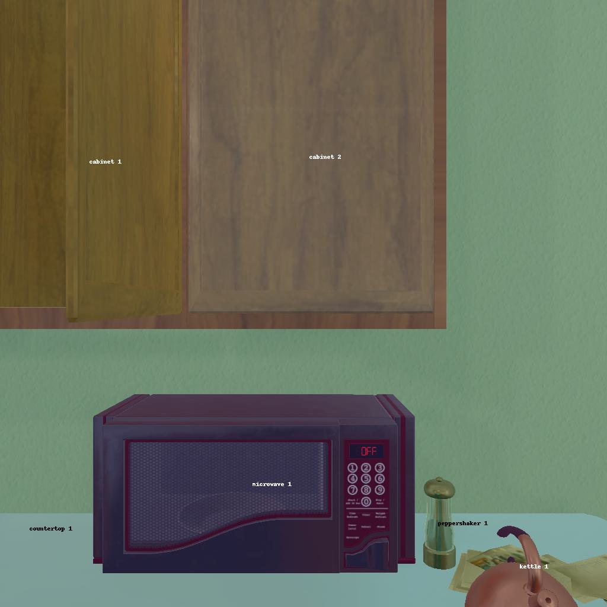
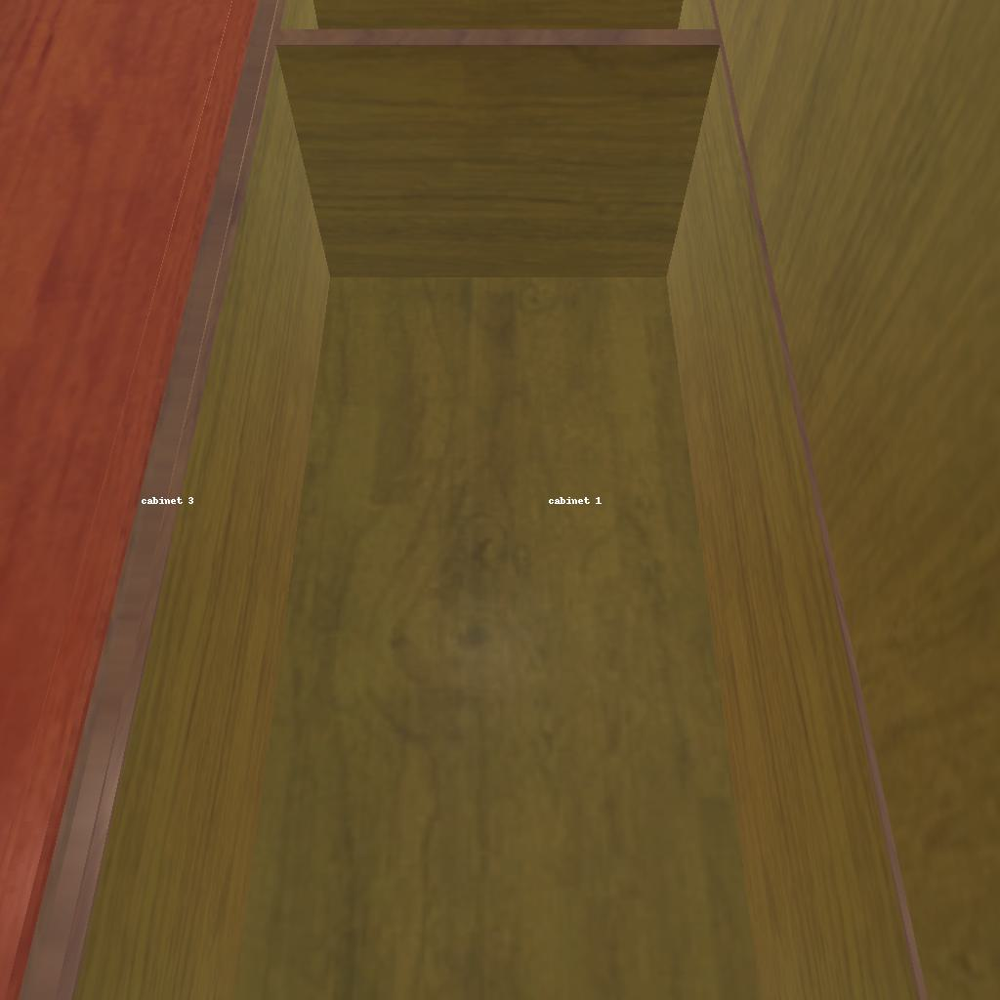

---------------------------------------------------------task: 24---------------------------------------------------------
--------------------------------------------------------------------------------------------------------------------------------------------------------------------
--------------------------------------------------------------------------------------------------------------------------------------------------------------------
Step:--------------------------------------------------------------------------17-------------------------------------------------------------------------------
----------------------------------------
VLM Prompt:
Image1:
Image2:
**Instruction**
1. Analyze the provided image to identify all visible household objects, focusing on those relevant to the task description "put a hot tomato in fridge."
2. Use the analysis of the image and the task hint "The agent must find an object of the desired type, pick it up, go to a microwave, heat the object with the microwave, then find the correct location to place it, and put it down there. The agent does not need to use the microwave button or open the microwave to heat the object, and the agent just needs to do action that is "heat the object with the microwave"." to answer the question: what is the most reasonable action in the choices for the task description "put a hot tomato in fridge"?
4. Decide and write the answer using the template: The answer is: (i): , where i is the real number. If there is no desired object in the image, search every place based on **Initial Observation** to find the object. And if no one is exactly correct, choose a similar answer.
**Initial Observation**
You are in the middle of a room. Looking quickly around you, you can see cabinet (1-14), countertop (1-2), microwave (1), drawer (1-5), sink (1), sinkbasin (1), coffeemachine (1), stoveburner (1-4), toaster (1), fridge (1), diningtable (1), garbagecan (1), safe (1)
**Answer Choices**
(1): go to cabinet 2
(2): go to cabinet 3
(3): go to countertop 1
(4): go to cabinet 4
(5): go to cabinet 5
(6): go to cabinet 6
(7): go to drawer 1
(8): go to drawer 2
(9): go to drawer 3
(10): go to cabinet 7
(11): go to cabinet 8
(12): go to sink 1
(13): go to sinkbasin 1
(14): go to coffeemachine 1
(15): go to cabinet 9
(16): go to cabinet 10
(17): go to drawer 4
(18): go to cabinet 11
(19): go to stoveburner 1
(20): go to stoveburner 2
(21): go to stoveburner 3
(22): go to stoveburner 4
(23): go to cabinet 12
(24): go to toaster 1
(25): go to drawer 5
(26): go to countertop 2
(27): go to cabinet 13
(28): go to cabinet 14
(29): go to diningtable 1
(30): go to garbagecan 1
(31): go to safe 1
(32): open cabinet 1
(33): close cabinet 1
(34): take nothing from cabinet 1
(35): examine cabinet 1
**Answer**
Let's think step by step by following the instructions.
----------------------------------------
----------------------------------------
Original Response:
The task at hand is to put a hot tomato in the fridge. To do this, the agent must first find a tomato, heat it in the microwave, and then place it in the fridge.
From the Initial Observation, we know that there are multiple cabinets (1-14), a countertop (1-2), and a microwave (1) available. However, neither of the provided images shows the inside of any cabinets, the countertop, or a fridge. Therefore, we cannot directly locate a tomato from the images.
Based on common household organization, it's reasonable to assume that fresh produce like tomatoes might be stored in a cabinet or on a countertop. Since the agent does not need to use the microwave button or open the microwave to heat the object, the agent's first task is to find the tomato.
Given the available options and the need to search for the tomato, the most reasonable action is to start by opening cabinets closest to the microwave and countertops, as these are likely places for food storage.
Since we cannot see inside cabinet 1 and it is the closest to the microwave, the agent should start there.
The answer is: (32): open cabinet 1.
----------------------------------------
----------------------------------------
>>> Refine Original VLM Response and Get Pure Action: open cabinet 1
----------------------------------------
-----------------------------------------------------------------
Running time: 36.46464657783508 seconds
Total Money: 12.188930000000003
-----------------------------------------------------------------
-----------------------------------------------------------------
Text Observation:Nothing happens.
-----------------------------------------------------------------
UNSUCCEED